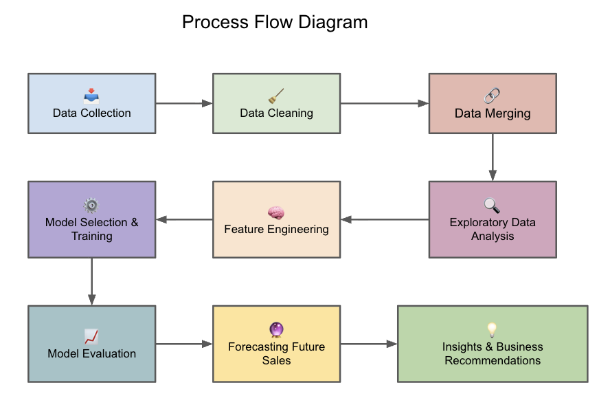
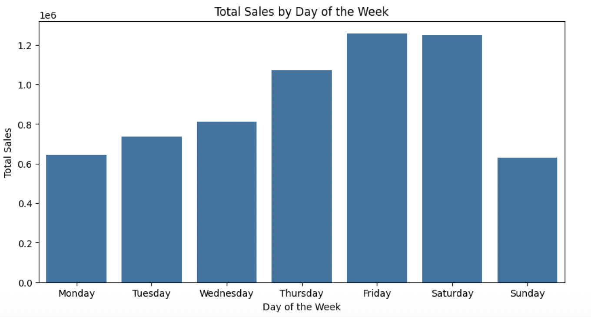
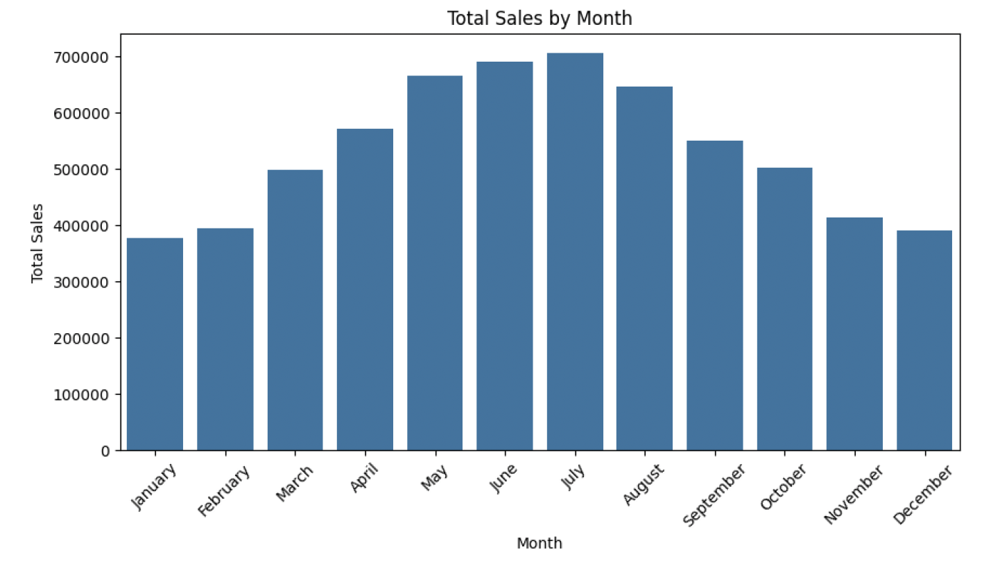
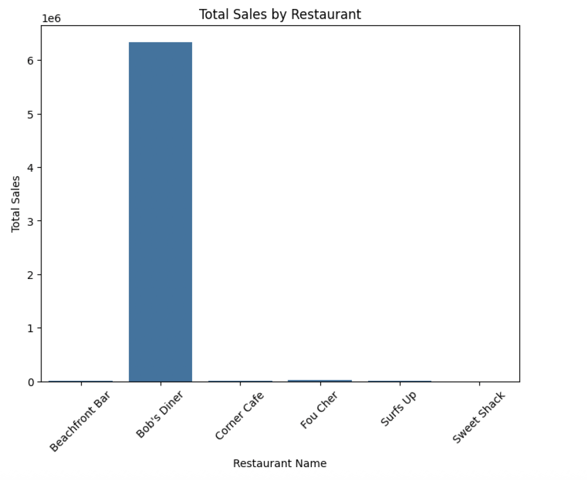
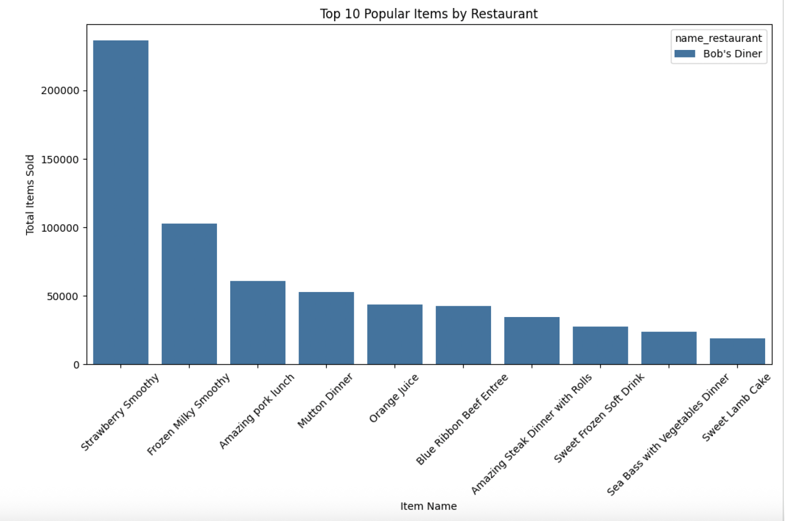
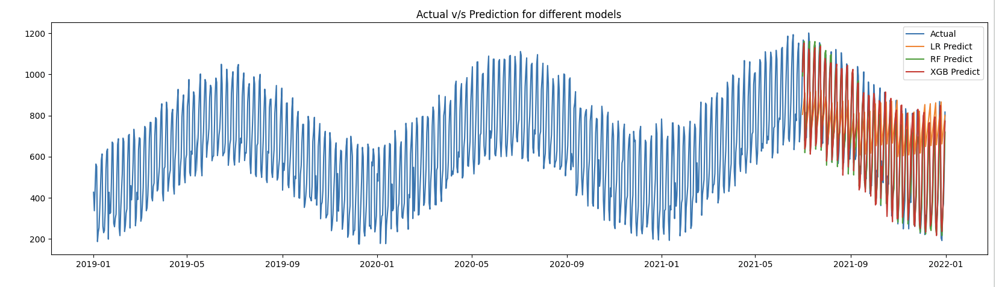

Problem Statement
In the ever-changing competitive market conditions, there is a need to make correct business decisions and plan for future events. The effectiveness of a business decision is influenced by the accuracy of the models used. Demand is the most important aspect of a business's ability to achieve its objectives. Many decisions in business depend on demand, such as production, sales, and staffing requirements.
Project Objective
Fresh Analytics, a data analytics company, aims to comprehend and predict the demand for various items across restaurants. The goal is to forecast sales of items across different restaurants over the years, enabling better decision-making and planning.
Process Flow

Approach
- Performed data cleaning and exploratory data analysis after merging three files.
- Identified sales trends across days and months.
- Analyzed restaurant-level performance and top-selling items.
- Built and compared multiple machine learning models (Linear Regression, XGBoost, Random Forest).
- Evaluated models using RMSE and R² metrics.
- Forecasted future demand for 2022-2023.
Key Insights
Peak Sales Days
Most sales happened on Fridays and Saturdays.

Top Month
July recorded the highest overall sales.

Top Restaurant
Bob’s Diner led with total sales, followed by Fou Cher.

Top Item
Strawberry Smoothie – 236,337 units sold.

Model Performance
- Random Forest Regressor achieved the best accuracy among all models.
- Linear Regression and XGBoost were slightly less accurate but computationally faster.
- Predictions for 2022–2023 show a similar sales trend pattern as previous years.
Forecast
Forecast for the year 2021 to 2022 for the different models

Conclusion
The project successfully built a demand forecasting pipeline that predicts restaurant item sales using historical data. The model insights help optimize inventory, staffing, and marketing strategies. Future work can include integrating external factors such as weather, holidays, and promotions for even more accurate forecasting.